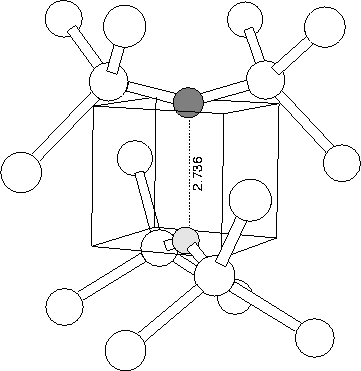

|  |
It was previously proposed by members of our group that a substitutional NsOi pair could form the core of a STD [212]. The problem here is that the substitutional defect seems to be a rare defect. However, in analogy with the VO2 centre, we examined a substitutional split Ns-Os pair. This, however, was found to possess a deep level, with no bonding between the Ns and Os atoms. The addition of extra Oi in neighbouring bond centres did not provide sufficient strain to push the gap state up to give a shallow donor level. A diagram of the structure is shown in Figure 8.4.